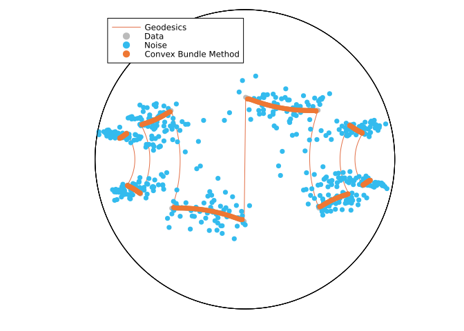

A comparison of the RCBM with the PBA, the SGM, and the CPPA for denoising a signal on the hyperbolic space
Hajg Jasa 6/27/24
Introduction
In this example we compare the Riemannian Convex Bundle Method (RCBM) [BHJ24] with the Proximal Bundle Algorithm, which was introduced in [HNP23], and with the Subgradient Method (SGM), introduced in [FO98], to denoise an artificial signal on the Hyperbolic space $\mathcal H^2$. This example reproduces the results from [BHJ24], Section 5.2.
using PrettyTables
using BenchmarkTools
using CSV, DataFrames
using ColorSchemes, Plots
using QuadraticModels, RipQP
using Random, LinearAlgebra, LRUCache
using ManifoldDiff, Manifolds, Manopt, ManoptExamplesThe Problem
Let $\mathcal M = \mathcal H^2$ be the $2$-dimensional hyperbolic space and let $p, q \in \mathcal M^n$ be two manifold-valued signals, for $n \in \mathbb N$. Let $f \colon \mathcal M \to \mathbb R$ be defined by
\[ f_q (p) = \frac{1}{n} \left( \frac{1}{2} \sum_{i = 1}^n \mathrm{dist}(p_i, q_i)^2 + \alpha \operatorname{TV}(p) \right) ,\]
where $\operatorname{TV}(p)$, is the total variation term given by
\[ \operatorname{TV}(p) = \sum_{i = 1}^{n-1} \mathrm{dist}(p_i, p_{i+1}) .\]
Numerical Experiment
We initialize the experiment parameters, as well as some utility functions.
Random.seed!(33)
n = 496 # (this is so that n equals the actual length of the artificial signal)
σ = 0.1 # Noise parameter
α = 0.05 # TV parameter
atol = 1e-8
k_max = 0.0
max_iters = 15000
#
# Colors
data_color = RGBA{Float64}(colorant"#BBBBBB")
noise_color = RGBA{Float64}(colorant"#33BBEE") # Tol Vibrant Teal
result_color = RGBA{Float64}(colorant"#EE7733") # Tol Vibrant Orangefunction artificial_H2_signal(
pts::Integer=100; a::Real=0.0, b::Real=1.0, T::Real=(b - a) / 2
)
t = range(a, b; length=pts)
x = [[s, sign(sin(2 * π / T * s))] for s in t]
y = [
[x[1]]
[
x[i] for
i in 2:(length(x) - 1) if (x[i][2] != x[i + 1][2] || x[i][2] != x[i - 1][2])
]
[x[end]]
]
y = map(z -> Manifolds._hyperbolize(Hyperbolic(2), z), y)
data = []
geodesics = []
l = Int(round(pts * T / (2 * (b - a))))
for i in 1:2:(length(y) - 1)
append!(
data,
shortest_geodesic(Hyperbolic(2), y[i], y[i + 1], range(0.0, 1.0; length=l)),
)
if i + 2 ≤ length(y) - 1
append!(
geodesics,
shortest_geodesic(Hyperbolic(2), y[i], y[i + 1], range(0.0, 1.0; length=l)),
)
append!(
geodesics,
shortest_geodesic(
Hyperbolic(2), y[i + 1], y[i + 2], range(0.0, 1.0; length=l)
),
)
end
end
#! In order to have length(data) ∝ pts, we need typeof(l) == Int and mod(pts, l) == 0.
if pts != length(data)
@warn "The length of the output signal will differ from the input number of points."
end
return data, geodesics
end
function matrixify_Poincare_ball(input)
input_x = []
input_y = []
for p in input
push!(input_x, p.value[1])
push!(input_y, p.value[2])
end
return hcat(input_x, input_y)
endWe now fix the data for the experiment…
H = Hyperbolic(2)
data, geodesics = artificial_H2_signal(n; a=-6.0, b=6.0, T=3)
Hn = PowerManifold(H, NestedPowerRepresentation(), length(data))
noise = map(p -> exp(H, p, rand(H; vector_at=p, σ=σ)), data)
p0 = noise
diameter = floatmax(Float64)… As well as objective, subdifferential, and proximal map.
function f(M, p)
return 1 / length(data) *
(1 / 2 * distance(M, data, p)^2 + α * ManoptExamples.Total_Variation(M, p))
end
domf(M, p) = distance(M, p, p0) < diameter / 2 ? true : false
function ∂f(M, p)
return 1 / length(data) * (
ManifoldDiff.grad_distance(M, data, p) +
α * ManoptExamples.subgrad_Total_Variation(M, p; atol=atol)
)
end
proxes = (
(M, λ, p) -> ManifoldDiff.prox_distance(M, λ, data, p, 2),
(M, λ, p) -> ManoptExamples.prox_Total_Variation(M, α * λ, p),
)We can now plot the initial setting.
global ball_scene = plot()
if export_orig
ball_data = convert.(PoincareBallPoint, data)
ball_noise = convert.(PoincareBallPoint, noise)
ball_geodesics = convert.(PoincareBallPoint, geodesics)
plot!(ball_scene, H, ball_data; geodesic_interpolation=100, label="Geodesics")
plot!(
ball_scene,
H,
ball_data;
markercolor=data_color,
markerstrokecolor=data_color,
label="Data",
)
plot!(
ball_scene,
H,
ball_noise;
markercolor=noise_color,
markerstrokecolor=noise_color,
label="Noise",
)
matrix_data = matrixify_Poincare_ball(ball_data)
matrix_noise = matrixify_Poincare_ball(ball_noise)
matrix_geodesics = matrixify_Poincare_ball(ball_geodesics)
CSV.write(
joinpath(results_folder, experiment_name * "-data.csv"),
DataFrame(matrix_data, :auto);
header=["x", "y"],
)
CSV.write(
joinpath(results_folder, experiment_name * "-noise.csv"),
DataFrame(matrix_noise, :auto);
header=["x", "y"],
)
CSV.write(
joinpath(results_folder, experiment_name * "-geodesics.csv"),
DataFrame(matrix_geodesics, :auto);
header=["x", "y"],
)
display(ball_scene)
end
We introduce some keyword arguments for the solvers we will use in this experiment
rcbm_kwargs = [
:cache => (:LRU, [:Cost, :SubGradient], 50),
:diameter => diameter,
:domain => domf,
:k_max => k_max,
:debug => [
:Iteration,
(:Cost, "F(p): %1.8f "),
(:ξ, "ξ: %1.16f "),
(:ε, "ε: %1.16f "),
:WarnBundle,
:Stop,
1000,
"\n",
],
:record => [:Iteration, :Cost, :Iterate],
:return_state => true,
]
rcbm_bm_kwargs = [
:cache => (:LRU, [:Cost, :SubGradient], 50),
:diameter => diameter,
:domain => domf,
:k_max => k_max,
]
pba_kwargs = [
:cache => (:LRU, [:Cost, :SubGradient], 50),
:debug => [
:Iteration,
:Stop,
(:Cost, "F(p): %1.16f "),
(:ν, "ν: %1.16f "),
(:c, "c: %1.16f "),
(:μ, "μ: %1.8f "),
:Stop,
1000,
"\n",
],
:stopping_criterion => StopWhenLagrangeMultiplierLess(atol) | StopAfterIteration(max_iters),
:record => [:Iteration, :Cost, :Iterate],
:return_state => true,
]
pba_bm_kwargs = [
:cache =>(:LRU, [:Cost, :SubGradient], 50),
:stopping_criterion => StopWhenLagrangeMultiplierLess(atol) | StopAfterIteration(max_iters),
]
sgm_kwargs = [
:cache => (:LRU, [:Cost, :SubGradient], 50),
:stopping_criterion => StopWhenSubgradientNormLess(√atol) | StopAfterIteration(max_iters),
:debug => [:Iteration, (:Cost, "F(p): %1.16f "), :Stop, 1000, "\n"],
:record => [:Iteration, :Cost, :Iterate],
:return_state => true,
]
sgm_bm_kwargs = [
:cache => (:LRU, [:Cost, :SubGradient], 50),
:stopping_criterion => StopWhenSubgradientNormLess(√atol) |
StopAfterIteration(max_iters),
]
cppa_kwargs = [
:stopping_criterion => StopWhenAny(
StopAfterIteration(max_iters), StopWhenChangeLess(atol)
),
:debug => [
:Iteration,
" | ",
DebugProximalParameter(),
" | ",
(:Cost, "F(p): %1.16f "),
" | ",
:Change,
"\n",
1000,
:Stop,
],
:record => [:Iteration, :Cost, :Iterate],
:return_state => true,
]
cppa_bm_kwargs = [
:stopping_criterion => StopWhenAny(
StopAfterIteration(max_iters), StopWhenChangeLess(atol)
),
]Finally, we run the optimization algorithms…
rcbm = convex_bundle_method(Hn, f, ∂f, p0; rcbm_kwargs...)
rcbm_result = get_solver_result(rcbm)
rcbm_record = get_record(rcbm)
#
pba = proximal_bundle_method(Hn, f, ∂f, p0; pba_kwargs...)
pba_result = get_solver_result(pba)
pba_record = get_record(pba)
#
sgm = subgradient_method(Hn, f, ∂f, p0; sgm_kwargs...)
sgm_result = get_solver_result(sgm)
sgm_record = get_record(sgm)
#
cppa = cyclic_proximal_point(Hn, f, proxes, p0; cppa_kwargs...)
cppa_result = get_solver_result(cppa)
cppa_record = get_record(cppa)… And we benchmark their performance.
if benchmarking
pba_bm = @benchmark proximal_bundle_method($Hn, $f, $∂f, $p0; $pba_bm_kwargs...)
rcbm_bm = @benchmark convex_bundle_method($Hn, $f, $∂f, $p0; $rcbm_bm_kwargs...)
sgm_bm = @benchmark subgradient_method($Hn, $f, $∂f, $p0; $sgm_bm_kwargs...)
cppa_bm = @benchmark cyclic_proximal_point($Hn, $f, $proxes, $p0; $cppa_bm_kwargs...)
#
experiments = ["RCBM", "PBA", "SGM", "CPPA"]
records = [rcbm_record, pba_record, sgm_record, cppa_record]
results = [rcbm_result, pba_result, sgm_result, cppa_result]
times = [
median(rcbm_bm).time * 1e-9,
median(pba_bm).time * 1e-9,
median(sgm_bm).time * 1e-9,
median(cppa_bm).time * 1e-9,
]
#
global B = cat(
experiments,
[maximum(first.(record)) for record in records],
[t for t in times],
[minimum([r[2] for r in record]) for record in records],
[distance(Hn, data, result) / length(data) for result in results];
dims=2,
)
#
global header = ["Algorithm", "Iterations", "Time (s)", "Objective", "Error"]
#
# Finalize - export costs
if export_table
for (time, record, result, experiment) in zip(times, records, results, experiments)
A = cat(first.(record), [r[2] for r in record]; dims=2)
CSV.write(
joinpath(results_folder, experiment_name * "_" * experiment * "-result.csv"),
DataFrame(A, :auto);
header=["i", "cost"],
)
end
CSV.write(
joinpath(results_folder, experiment_name * "-comparisons.csv"),
DataFrame(B, :auto);
header=header,
)
end
endWe can take a look at how the algorithms compare to each other in their performance with the following table…
| Algorithm | Iterations | Time (s) | Objective | Error |
|---|---|---|---|---|
| RCBM | 4017 | 67.1689 | 0.00179287 | 0.000331751 |
| PBA | 14807 | 108.278 | 0.00181956 | 0.000440844 |
| SGM | 15000 | 107.933 | 0.00179154 | 0.000330336 |
| CPPA | 15000 | 97.83 | 0.00179276 | 0.000332292 |
Lastly, we plot the results.
if export_result
# Convert hyperboloid points to Poincaré ball points
ball_b = convert.(PoincareBallPoint, rcbm_result)
ball_p = convert.(PoincareBallPoint, pba_result)
ball_s = convert.(PoincareBallPoint, sgm_result)
ball_c = convert.(PoincareBallPoint, cppa_result)
#
# Plot results
plot!(
ball_scene,
H,
ball_b;
markercolor=result_color,
markerstrokecolor=result_color,
label="Convex Bundle Method",
)
#
# Write csv files
matrix_b = matrixify_Poincare_ball(ball_b)
CSV.write(
joinpath(results_folder, experiment_name * "-bundle_optimum.csv"),
DataFrame(matrix_b, :auto);
header=["x", "y"],
)
#
# Suppress some plots for clarity, since they are visually indistinguishable
# plot!(ball_scene, H, ball_p; label="Proximal Bundle Method")
# plot!(ball_scene, H, ball_s; label="Subgradient Method")
# plot!(ball_scene, H, ball_c; label="CPPA")
display(ball_scene)
end
Literature
- [BHJ24]
- R. Bergmann, R. Herzog and H. Jasa. The Riemannian Convex Bundle Method, preprint (2024), arXiv:2402.13670.
- [FO98]
- O. Ferreira and P. R. Oliveira. Subgradient algorithm on Riemannian manifolds. Journal of Optimization Theory and Applications 97, 93–104 (1998).
- [HNP23]
- N. Hoseini Monjezi, S. Nobakhtian and M. R. Pouryayevali. A proximal bundle algorithm for nonsmooth optimization on Riemannian manifolds. IMA Journal of Numerical Analysis 43, 293–325 (2023).